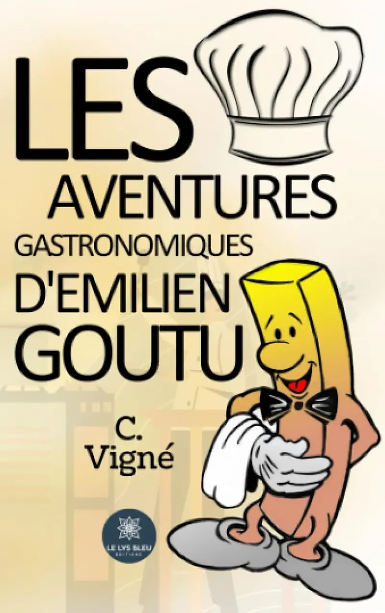

Le site officiel de C. Vigné
Un roman de C. Vigné · Le Lys Bleu Éditions
Partez à la table du monde avec Emilien Goûtu, critique gastronomique passionné, à travers des histoires où saveurs et récits se mêlent en une symphonie inoubliable.
Les dernières aventures d'Emilien Goûtu, contées par C. Vigné
Chargement…

Emilien Goûtu, critique gastronomique d'exception, parcourt le monde au fil de ses aventures savoureuses. Chaque histoire est une invitation à festoyer avec lui, entre haute cuisine, rencontres insolites et révélations culinaires qui nourrissent autant l'âme que le palais.
En savoir plusC. Vigné est un passionné de gastronomie dont l'imaginaire débordant a donné vie au savoureux personnage d'Emilien Goûtu. Nourri de voyages culinaires et d'une curiosité insatiable pour les arts de la table, il signe ici son premier roman, hommage vibrant à la cuisine comme art de vivre.
Lire la biographie